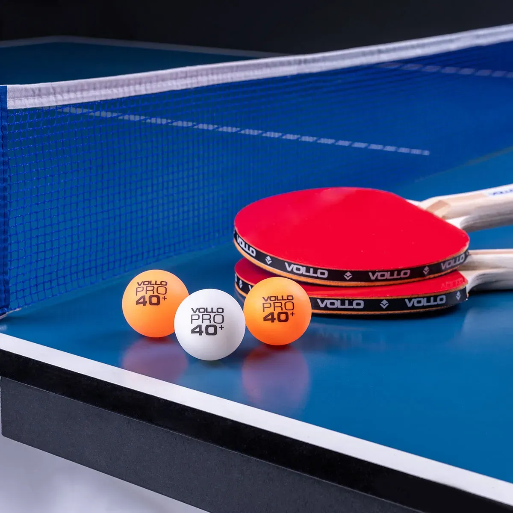

Modalidade esportiva
Tênis de mesa
O tênis de mesa surgiu na Inglaterra no fim do século XIX como uma versão de salão do tênis. Suas regras internacionais foram estabelecidas em 1926, e o esporte entrou no programa olímpico em 1988.

Modalidade esportiva
O tênis de mesa surgiu na Inglaterra no fim do século XIX como uma versão de salão do tênis. Suas regras internacionais foram estabelecidas em 1926, e o esporte entrou no programa olímpico em 1988.